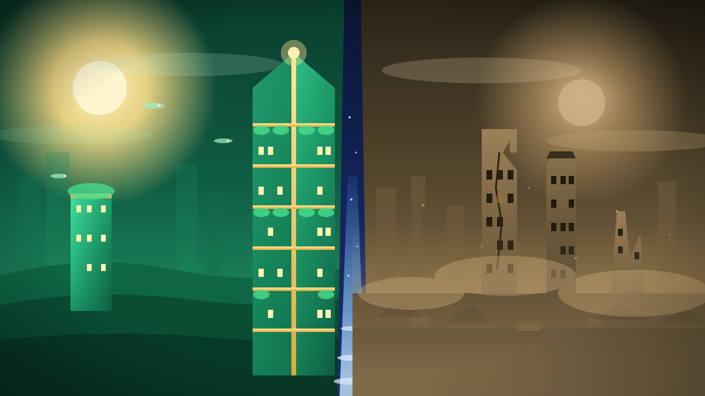
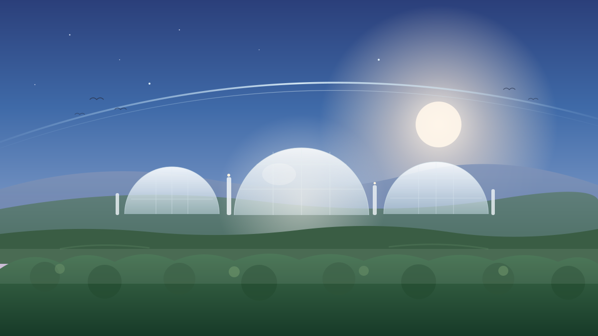
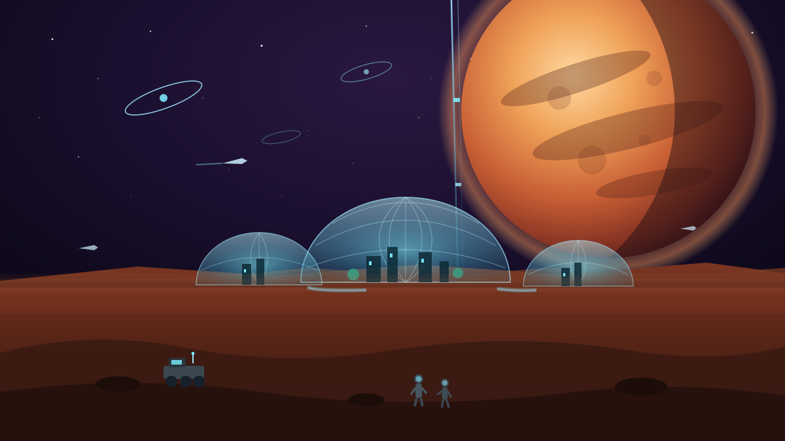
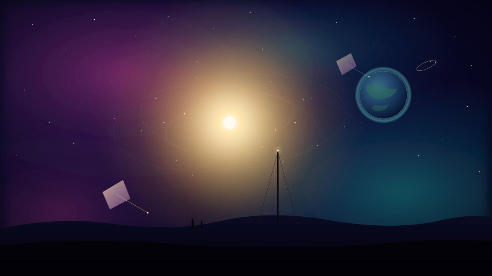

A speculative forecast · written 2026사변적 미래 예측 · 2026년 작성一项思辨性预测 · 2026 年撰写
One present, three futures. A forecast of the next two centuries, grounded in real 2026 trends — from the AI surge of 2030 to where it all lands in 2200 — told as three branches, illustrated era by era.하나의 현재, 세 개의 미래. 실제 2026년 추세에 기반해 향후 두 세기를 내다본 예측 — 2030년 AI 급증에서 그 모든 게 도착하는 2200년까지 — 세 갈래로, 시대별 그림과 함께.一个当下，三种未来。一份基于真实 2026 年趋势、对未来两个世纪的预测——从 2030 年的 AI 激增到它在 2200 年的落点——以三条分支讲述，逐时代配图。
In plain terms쉽게 말하면简单地说
A huge windfall is almost certainly coming — AI that works like a colleague, near-free clean energy, much longer lives, a foothold in space. All three futures agree on that. They split on one thing only: do we share it, or do a few grab it? Picture a town about to strike oil. Nobody argues whether the oil is real — they argue over who gets the money. These three stories are that same town, 200 years on: 엄청난 횡재가 거의 확실히 와요 — 동료처럼 일하는 AI, 거의 공짜인 청정 에너지, 훨씬 긴 수명, 우주의 발판. 세 미래 다 그건 인정해요. 딱 하나에서만 갈려요: 나눌까, 소수가 독차지할까? 유전이 터지기 직전인 마을을 떠올려 봐요. 기름이 진짜냐로는 안 싸워요 — 그 돈을 누가 갖느냐로 싸우죠. 이 세 이야기는 같은 마을의 200년 뒤예요: 一笔巨大的横财几乎必然到来——像同事一样工作的 AI、近乎免费的清洁能源、长得多的寿命、太空的立足点。三种未来对此都认同。它们只在一件事上分歧：我们分享，还是被少数人独占？想象一个即将钻到石油的小镇。没人争论石油是否真实——他们争的是谁拿到钱。这三个故事就是同一个小镇 200 年后的样子：
The point: we survive in all three. The real danger was never extinction — it's who we become. And that's decided less by big breakthroughs than by the dull, repeated choice to share or to wall off. 요점: 세 갈래 다 살아남아요. 진짜 위험은 멸종이 아니라 '우리가 어떤 존재가 되느냐'였어요. 그리고 그건 대발견보다, 나눌까 벽 칠까 하는 지루한 반복 선택이 정해요. 要点：三条分支中人类都存活。真正的危险从来不是灭绝——而是我们成为谁。而这更多由'分享还是筑墙'这种枯燥而反复的选择决定，而非任何重大突破。
This isn't a prediction of what will happen — it's a map of the choices that decide it. Every claim starts from something real and visible in 2026: AI getting rapidly more capable, solar and batteries getting cheap, populations shrinking, fusion almost working, the climate bill coming due. From there it reasons forward. Because the future isn't fixed, it's told as three branches that start from the same 2026 and split on the choices we actually control. Each era opens with a picture, then a short synthesis (what's true in all three, where they split, what to watch for in the real world), then the three branches side by side. 이건 '무슨 일이 일어날지' 맞히는 예언이 아니라, 결과를 정하는 '선택'의 지도예요. 모든 주장은 2026년에 실제로 보이는 것에서 시작해요: 빠르게 똑똑해지는 AI, 싸지는 태양광·배터리, 줄어드는 인구, 거의 되는 핵융합, 도착한 기후 청구서. 거기서 앞으로 추론해 나가죠. 미래는 정해져 있지 않으니, 같은 2026년에서 출발해 우리가 실제로 통제하는 선택에서 갈라지는 세 갈래로 풀어냈어요. 각 시대는 그림으로 시작해, 짧은 종합(세 갈래 다 맞는 것, 갈라지는 지점, 현실에서 지켜볼 신호)을 거쳐, 세 갈래를 나란히 보여줘요. 这不是'会发生什么'的预言，而是决定结果的'选择'的地图。每个论断都从 2026 年真实可见的东西出发：迅速变强的 AI、变便宜的太阳能与电池、萎缩的人口、几近成功的核聚变、到期的气候账单。再从那里向前推理。因为未来并非注定，它以从同一个 2026 年出发、在我们真正掌控的选择上分岔的三条分支来讲。每个时代以一幅画开场，接着是简短的综合（三条分支都成立的部分、它们在何处分岔、现实中要关注的信号），然后把三条分支并排呈现。
AI & cognition · climate & energy · geopolitics & governance · demography & society · biotech & health · space & frontier.AI·인지 · 기후·에너지 · 지정학·거버넌스 · 인구·사회 · 바이오·건강 · 우주·프런티어.AI·认知 · 气候·能源 · 地缘·治理 · 人口·社会 · 生物科技·健康 · 太空·前沿。
Each claim carries a tag — likely, plausible, wildcard, remote — so you can see how sure (or unsure) it is.주장마다 태그가 붙어요 — likely(유력)·plausible(개연)·wildcard(돌발)·remote(희박). 얼마나 확신하는지(혹은 못 하는지) 바로 보여요.每个论断都带标签——likely(很可能)·plausible(合理)·wildcard(突变)·remote(渺茫)——让你一眼看出它有多确定（或多不确定）。
Each era names the single decision or event that had to break one way for that branch — the hinge, not just the outcome.각 시대는 그 갈래가 되려면 한쪽으로 깨져야 했던 단 하나의 결정·사건을 짚는다 — 결과가 아니라 경첩을.每个时代点明那条分支必须朝某一方向断裂的单一决定或事件——是铰链，而非仅是结果。
In every branch, the technology arrives. The open question is who it's shared with — a floor for everyone, or a wall around a few.어느 갈래에서도 기술은 도착해요. 열린 질문은 '누구와 나누느냐' — 모두를 위한 바닥이냐, 소수를 두른 벽이냐.在每条分支中，技术都会到来。开放的问题是它与谁共享——给所有人的地板，还是围住少数人的墙。
2030
The Acceleration가속加速
By 2030, AI has gone from tool to coworker inside office work, and money and power start reorganizing around who owns the computing. All three futures share this — the difference is who absorbs the hit. In Ascent, safety work keeps up with capability, job loss is gradual enough for people to retrain, and cheap clean energy pushes emissions past their peak. In Fracture, the power pools in five labs and the chip owners behind them, junior office jobs vanish faster than safety nets can form, and an early insurance collapse plus AI-faked media crack the shared sense of "what's true." Wildcard flips the table: in 2029 an AI helps discover a room-temperature superconductor, which makes fusion cheap and prices energy abundance into markets years before a single plant is built. 2030년이면 AI가 사무실에서 도구를 넘어 동료가 되고, 돈과 권력이 '누가 컴퓨팅을 쥐느냐'를 중심으로 재편되기 시작해요. 세 미래 다 여기까진 같아요 — 차이는 누가 충격을 떠안느냐죠. Ascent에서는 안전 연구가 능력을 따라가고, 실직이 재교육이 가능할 만큼 천천히 오고, 싼 청정 에너지가 배출을 정점 너머로 밀어요. Fracture에서는 힘이 다섯 연구소와 그 뒤 칩 주인들에게 몰리고, 신입 사무직이 안전망보다 빨리 사라지고, 이른 보험 붕괴와 AI 가짜 영상이 '뭐가 진짜냐'는 공통 감각을 깨뜨려요. Wildcard는 판을 엎어요: 2029년 AI가 상온 초전도체 발견을 도와, 핵융합이 싸지고 단 한 곳도 짓기 전에 에너지 풍요가 시장 가격에 박혀요. 到 2030 年，AI 在办公室里从工具变成同事，金钱与权力开始围绕'谁拥有算力'重组。三种未来到此都一样——差别在于谁承受冲击。在 Ascent，安全研究跟上能力，失业足够渐进、人们来得及再培训，廉价清洁能源把排放推过峰值。在 Fracture，力量汇聚到五家实验室及其背后的芯片所有者，初级办公岗位比安全网形成得更快地消失，早期的保险崩盘加上 AI 伪造的媒体，击碎了'什么是真的'这一共同感。Wildcard 掀翻棋桌：2029 年 AI 帮助发现常温超导体，使核聚变变便宜，并在一座电厂建成之前数年就把能源充裕计入市场。
AI agents penetrate white-collar work and force a reorganization of energy and capital around compute — in every branch. The disruption is certain; only its distribution is open.AI 에이전트가 사무직에 침투해 에너지·자본을 컴퓨트 중심으로 재편한다 — 모든 갈래에서. 교란은 확실하고, 열려 있는 건 분배뿐이다.AI 智能体渗透白领工作，迫使能源与资本围绕算力重组——在每条分支中皆然。颠覆是确定的；唯有其分配是开放的。
Whether governments build a redistributive buffer that couples AI displacement and climate-insurance risk as one problem, or let both run as separate, unmanaged shocks.정부가 AI 실직과 기후-보험 위험을 하나의 문제로 묶는 재분배 완충을 짓느냐, 아니면 둘을 별개의 관리되지 않은 충격으로 흘려보내느냐.政府是否建立把 AI 岗位替代与气候保险风险作为同一问题耦合的再分配缓冲，还是放任二者作为分离、无人管理的冲击。
The first insurance market to stop writing new policies in a major coastal or wildfire region — a private-sector retreat is the earliest hard signal of the Fracture path.주요 해안·산불 지역에서 신규 보험 인수를 멈추는 첫 보험시장 — 민간의 후퇴가 Fracture 경로의 가장 이른 단단한 신호다.首个在主要沿海或山火地区停止承保新保单的保险市场——私营部门的撤退是 Fracture 路径最早的硬信号。
AI capability & concentration, set against the early arrival of the climate bill — the two shocks that either get coupled or orphaned.AI 역량·집중, 그리고 일찍 도착한 기후 청구서 — 묶이거나 버려지는 두 충격.AI 能力与集中，对上提前到来的气候账单——这两道冲击要么被耦合，要么被遗弃。
Ascent
AI agents are built into office work, lifting output in software, drug discovery, and logistics. Safety and testing kept up — no disaster from misuse. Solar, batteries, and Chinese manufacturing push clean power past the tipping point; emissions level off and start falling. The US and China stay rivals but keep trading. New drugs (GLP-1, early gene therapies) reshape chronic illness.AI 에이전트가 사무 업무에 들어가 소프트웨어·신약·물류 산출을 끌어올려요. 안전·시험이 보조를 맞춰 오용으로 인한 재앙이 없었고요. 태양광·배터리·중국 제조가 청정 전력을 분기점 너머로 밀어 배출이 멈췄다 줄기 시작해요. 미·중은 경쟁하되 계속 거래해요. 새 약(GLP-1, 초기 유전자 치료)이 만성질환을 바꿔요.AI 智能体被嵌入办公室工作，提升软件、药物发现与物流的产出。安全与测试跟上了——没有滥用造成的灾难。太阳能、电池与中国制造把清洁电力推过临界点；排放趋平并开始下降。中美保持对手但继续贸易。新药（GLP-1、早期基因疗法）重塑慢性病。
Branch point: no big AI disaster before the rules harden. With no "Chernobyl moment," public trust holds and rollout continues.분기점: 규칙이 굳기 전 큰 AI 재앙이 없었어요. '체르노빌 순간'이 없으니 대중 신뢰가 유지되고 배치가 계속돼요.分岔点：在规则变硬之前没有大的 AI 灾难。没有"切尔诺贝利时刻"，公众信任得以保持，部署继续。
Fracture
AI roughly doubles in capability every ~6 months, but the power sits in ~5 labs and the chip owners behind them. Office jobs vanish faster than people can retrain. The climate bill arrives early — failed monsoons back to back, and a hurricane season that breaks insurance markets. AI-faked media erodes a shared sense of facts right before key elections. Data-center demand slams into grid limits, and gas fills the gap.AI는 ~6개월마다 능력이 두 배가 되지만, 힘은 ~5개 연구소와 그 뒤 칩 주인들에게 있어요. 사무직이 재교육보다 빨리 사라져요. 기후 청구서가 일찍 와요 — 연속된 몬순 실패, 그리고 보험시장을 깨는 허리케인 시즌. AI 가짜 영상이 핵심 선거 직전 공통의 사실 감각을 침식해요. 데이터센터 수요가 전력망 한계에 부딪히고, 가스가 빈자리를 메워요.AI 大约每 6 个月能力翻一番，但力量握在约 5 家实验室及其背后的芯片所有者手中。办公岗位比人们再培训更快地消失。气候账单提前到来——接连失败的季风，以及击垮保险市场的飓风季。AI 伪造的媒体在关键选举前侵蚀共同的事实感。数据中心需求撞上电网极限，天然气填补缺口。
Branch point: governments treat AI job loss and the insurance collapse as separate quarterly problems, and never build the one safety net that could absorb both.분기점: 정부가 AI 실직과 보험 붕괴를 따로 분기별 문제로 다뤄, 둘 다 흡수할 단 하나의 안전망을 끝내 안 지어요.分岔点：政府把 AI 失业与保险崩盘当作分离的季度问题，始终没建起能同时吸收二者的那张安全网。
Wildcard
An AI materials search proposes a copper-nitride-hydride superconductor that works near room temperature and normal pressure; three labs confirm it by 2029. The shock is the speed — a decade of searching done in eleven months. Superconducting magnets make fusion far cheaper as reactors cross the break-even line. Markets price in cheap energy before a single full-scale plant exists; money pours in.AI 재료 탐색이 상온·상압 근처에서 작동하는 구리-질소-수소 초전도체를 제안하고, 세 연구소가 2029년 확인해요. 충격은 속도예요 — 10년치 탐색을 11개월에. 초전도 자석이 핵융합을 훨씬 싸게 만들고 원자로가 손익분기선을 넘어요. 단 한 곳의 본격 발전소도 없는데 시장은 싼 에너지를 미리 반영하고, 돈이 쏟아져요.一次 AI 材料搜索提出在常温常压附近工作的铜氮氢化物超导体；三家实验室在 2029 年确认。冲击在于速度——十年的搜索在十一个月内完成。超导磁体让核聚变便宜得多，反应堆越过盈亏平衡线。在一座全规模电厂出现之前，市场已计入廉价能源；资金涌入。
Branch point: AI-driven search delivers a room-temperature superconductor a generation early, blowing up the cost of energy.분기점: AI 탐색이 상온 초전도체를 한 세대 일찍 내놔, 에너지 비용을 폭발시켜요.分岔点：AI 驱动的搜索提前一代交付常温超导体，炸开能源成本。
2050
The Reckoning청산清算
By 2050 both the machine and the climate have come due, and the bill is paid by politics, not technology. All three branches run on the same engine: AI is superhuman at specific tasks, fusion and clean grids move from demos to real deployment, biology starts bending to computing, and climate damage pushes tens to hundreds of millions to move. What changes is never the technology — it's who grabbed the gains and whether the pain was shared. Ascent and Fracture are the same decade run with opposite sharing policies. Wildcard shows the trap even abundance can't dodge: near-free electricity and proven age-reversal arrive together, but unequal access turns miracles into a "longevity apartheid." The deciding factor in 2050 wasn't whether breakthroughs landed — it was whether the institutions of the 2040s forced them to be shared. 2050년이면 기계도 기후도 청구서가 도래하고, 그 셈은 기술이 아니라 정치가 치러요. 세 갈래 다 같은 엔진으로 돌아가요: AI는 특정 작업에선 초인적이고, 핵융합과 청정 전력망이 시연에서 실제 배치로 넘어가고, 생물학이 컴퓨팅에 굽기 시작하고, 기후 피해가 수천만~수억 명을 이주시켜요. 바뀌는 건 기술이 아니라 — 누가 이득을 챙겼고 고통이 공유됐느냐예요. Ascent와 Fracture는 같은 10년을 정반대 분배 정책으로 돌린 거예요. Wildcard는 풍요도 못 피하는 함정을 보여줘요: 거의 공짜 전기와 입증된 노화역전이 함께 오지만, 불평등한 접근이 기적을 '장수 차별'로 바꿔요. 2050년을 가른 건 돌파가 도착했느냐가 아니라, 2040년대 제도가 그걸 나누도록 강제했느냐였어요. 到 2050 年，机器与气候都到期了，账单由政治、而非技术来付。三条分支跑在同一引擎上：AI 在特定任务上超越人类，核聚变与清洁电网从演示走向真正部署，生物学开始向算力低头，气候损害推动数千万到数亿人迁移。改变的从来不是技术——而是谁攫取了收益、痛苦是否被分担。Ascent 与 Fracture 是同一个十年以相反的分享政策运行。Wildcard 展示连充裕也躲不掉的陷阱：近乎免费的电力与已证实的逆龄一同到来，但不平等的获取把奇迹变成'长寿隔离'。2050 年的决定因素不是突破是否落地——而是 2040 年代的制度是否迫使它们被分享。
Superhuman-in-domain AI, deploying fusion and clean grids, biology yielding to compute, and mass climate displacement all land in every branch. What is not robust is who they enriched.영역 내 초인 AI, 배치되는 핵융합·청정 전력망, 컴퓨트에 굴복하는 생물학, 대규모 기후 실향 — 모두 모든 갈래에서 도착한다. 확실하지 않은 건 그것들이 누구를 부유하게 했느냐다.领域内超人 AI、部署中的核聚变与清洁电网、向算力屈服的生物学、大规模气候流离——在每条分支中都落地。不稳固的是它们让谁致富。
Distribution policy, decided in the early 2040s — societies that built redistribution and compute governance before the windfall stayed cohesive; those that let a few owners privatize it ruptured.2040년대 초에 결정된 분배 정책 — 횡재 전에 재분배와 컴퓨트 거버넌스를 지은 사회는 결속을 유지했고, 소수 소유자에게 사유화를 허용한 사회는 파열했다.在 2040 年代初决定的分配政策——在横财之前建立再分配与算力治理的社会保持凝聚；放任少数所有者将其私有化的社会破裂。
Whether the first sovereign or public "AI dividend" — compute returns paid directly to citizens — moves from proposal to law in any major economy.첫 국가·공공 'AI 배당' — 컴퓨트 수익을 시민에게 직접 지급 — 이 어느 주요 경제에서 제안에서 법으로 넘어가는지.首个主权或公共"AI 红利"——把算力收益直接付给公民——是否在任一主要经济体从提案变为法律。
Climate adaptation at 2–2.7°C meets the question of who owns the productivity and longevity windfall.2~2.7°C에서의 기후 적응이, 생산성·장수 횡재를 누가 소유하느냐의 물음과 만난다.2~2.7°C 下的气候适应，遇上谁拥有生产力与长寿横财的问题。
Ascent
Average incomes rise broadly, but the fights are all about sharing: societies that built wage insurance, shorter weeks, and public AI dividends stay together. AI is superhuman in specific areas and stays correctable. Warming bends toward ~2°C; the first commercial fusion plants power large-scale desalination and carbon capture. Hundreds of millions absorb climate migration that's now locked in. The first generation expecting 100 healthy years appears.평균 소득이 폭넓게 오르지만, 싸움은 전부 분배 얘기예요: 임금보험·주4일·공공 AI 배당을 지은 사회가 함께 남아요. AI는 특정 영역에서 초인적이되 교정 가능하게 유지돼요. 온난화는 ~2°C로 휘고, 첫 상용 핵융합이 대규모 담수화·탄소포집을 돌려요. 수억 명이 이미 정해진 기후 이주를 흡수해요. 100년 건강수명을 기대하는 첫 세대가 등장해요.平均收入广泛上升，但争斗全是关于分享：建立了工资保险、更短工时与公共 AI 红利的社会保持团结。AI 在特定领域超人，却保持可纠。变暖弯向约 2°C；首批商业核聚变电厂为大规模海水淡化与碳捕集供电。数亿人吸收已被锁定的气候迁移。期待 100 年健康寿命的第一代出现。
Branch point: in the early 2040s enough societies chose sharing over grabbing, so abundance paid for cohesion instead of exploding into class conflict.분기점: 2040년대 초 충분한 사회가 독차지 대신 나눔을 택해, 풍요가 계급 갈등으로 터지는 대신 결속에 쓰였어요.分岔点：2040 年代初足够多的社会选择分享而非攫取，于是充裕用于凝聚，而非爆发为阶级冲突。
Fracture
Warming passes 1.5°C toward 2.4–2.7°C; 200–400 million people are displaced and borders harden everywhere. AI captured the profits: a few compute-owning firms and states hold enormous wealth while a shaky majority lives on patchy basic income. The great powers split into armed blocs over chips, energy, and rare earths. But where money was invested, adaptation is real — desalination and heat-tough crops keep India and the Sahel livable.온난화가 1.5°C를 넘어 2.4~2.7°C로 가고, 2~4억 명이 실향하며 국경은 어디서나 굳어요. AI가 이익을 가져갔어요: 컴퓨팅을 쥔 소수 기업·국가가 막대한 부를 쥐고, 불안한 다수는 듬성한 기본소득으로 살아요. 강대국은 칩·에너지·희토류를 두고 무장 블록으로 갈라져요. 하지만 돈이 투자된 곳에선 적응이 진짜예요 — 담수화와 내열 작물이 인도와 사헬을 살 만하게 유지해요.变暖越过 1.5°C 朝 2.4~2.7°C 而去；2~4 亿人流离，边境处处变硬。AI 攫取了利润：少数拥有算力的企业与国家握有巨额财富，而摇摇欲坠的多数靠零散的基本收入生活。大国就芯片、能源与稀土分裂为武装阵营。但在投入资金之处，适应是真实的——海水淡化与耐热作物让印度与萨赫勒保持宜居。
Branch point: failing to rein in compute concentration around 2040 let private and authoritarian players keep the windfall for themselves.분기점: 2040년경 컴퓨팅 집중을 통제하지 못해, 사적·권위주의 세력이 횡재를 자기 것으로 챙겼어요.分岔点：2040 年前后未能约束算力集中，让私营与威权玩家把横财据为己有。
Wildcard
Superconducting fusion and lossless grids drive electricity toward free — but only after a trillion-dollar, fifteen-year buildout, and the gains pool where money already was. Oil states collapse or pivot hard (the 2041 Gulf realignment). AI research turns to biology: proven age-reversal in monkeys in 2044, and the rich line up. Cheap energy finally makes desalination and carbon capture affordable, bending the climate curve. "Longevity apartheid" riots hit three continents in 2047.초전도 핵융합과 무손실 전력망이 전기를 공짜 쪽으로 몰지만 — 1조 달러, 15년의 건설 뒤이고, 이득은 이미 돈이 있던 곳에 고여요. 산유국은 붕괴하거나 크게 선회해요(2041 걸프 재편). AI 연구가 생물학으로 향해요: 2044년 원숭이 노화역전 입증, 부자들이 줄을 서요. 싼 에너지가 마침내 담수화·탄소포집을 감당 가능하게 만들어 기후 곡선을 휘어요. '장수 차별' 폭동이 2047년 세 대륙을 쳐요.超导核聚变与无损电网把电力推向免费——但要在万亿美元、十五年的建设之后，而收益汇聚到本已有钱之处。石油国崩溃或大幅转向（2041 年海湾重组）。AI 研究转向生物学：2044 年在猴子身上证实逆龄，富人排起队。廉价能源终于让海水淡化与碳捕集变得负担得起，弯折气候曲线。'长寿隔离'骚乱在 2047 年席卷三大洲。
Branch point: the energy windfall and longevity science arrive together but spread unequally — abundance turns into a fairness crisis.분기점: 에너지 횡재와 장수 과학이 함께 오지만 불평등하게 퍼져 — 풍요가 공정성 위기가 돼요.分岔点：能源横财与长寿科学一同到来却不平等地扩散——充裕变成公平危机。

2075
The Divergence분기分岔
All three forecasts land on the same verdict: 2075 is the moment humanity stops being one population on one path and splits into two. The split isn't by country or income anymore — it's by what a body and mind are allowed to become. They only disagree on which line does the splitting. Ascent draws it through the mind but keeps the floor high, so the gap stays a sliding scale. Fracture draws it through geography and biology: fortified arcologies hoarding life-extension above a poorer, hotter world that's still far from powerless. Wildcard draws it through time itself: age-reversal separates those who live indefinitely from those who don't. None of them predict coming back together; this era is about separating. The live question is governance, not technology — is the gap managed as a sliding scale, or frozen into a born-into caste line? 세 예측 다 같은 평결에 닿아요: 2075년은 인류가 한 길 위의 한 인구이기를 멈추고 둘로 갈라지는 순간이에요. 이제 갈림은 나라나 소득이 아니라 — 몸과 마음이 무엇이 되도록 허용되느냐예요. 셋은 어느 선이 가르냐에서만 갈려요. Ascent는 마음으로 긋되 바닥을 높게 유지해 격차를 미끄러지는 눈금으로 둬요. Fracture는 지리·생물로 그어요: 더 가난하고 더운 세계 위에서 수명연장을 사재기하는 요새 도시, 그래도 그 세계가 무력하진 않아요. Wildcard는 시간으로 그어요: 노화역전이 무한히 사는 자와 아닌 자를 갈라요. 셋 다 다시 합쳐짐을 예측하지 않아요 — 이 시대는 분리에 관한 거예요. 살아 있는 질문은 기술이 아니라 거버넌스: 격차가 미끄러지는 눈금으로 관리되느냐, 타고나는 계급선으로 굳느냐? 三份预测都落到同一判决：2075 年是人类不再是同一条路上的单一群体、而分裂为二的时刻。分裂不再按国家或收入——而是按身体与心智被允许成为什么。它们只在哪条线来分裂上分歧。Ascent 用心智来划，却把地板保持得高，让差距维持为滑动刻度。Fracture 用地理与生物来划：在更穷更热的世界之上囤积延寿的要塞城市，而那个世界仍远非无力。Wildcard 用时间本身来划：逆龄把无限存活者与非存活者分开。三者都不预测重新合拢——这个时代关乎分离。活的问题是治理而非技术：差距是被作为滑动刻度来管理，还是冻结为与生俱来的种姓线？
Some enhancement technology — cognitive, biological, or longevity — becomes powerful and unevenly adopted, and it, not territory or income, becomes the primary axis of human division. Cheap solar and open AI keep even the excluded from total powerlessness.어떤 증강 기술 — 인지·생물·장수 — 이 강력해지고 불균등하게 채택되며, 영토나 소득이 아닌 그것이 인간 분단의 1차 축이 된다. 값싼 태양광과 오픈 AI가 배제된 자조차 완전한 무력에서 지킨다.某种增强技术——认知、生物或长寿——变得强大且被不均地采纳，而它、而非领土或收入，成为人类分界的首要轴。廉价太阳能与开放 AI 使被排除者也不至完全无力。
Whether societies treat baseline enhancement as a publicly provisioned good (a bridgeable spectrum) or let elites fortify and hoard it (a hard caste line) — provision versus enclosure.사회가 기본 증강을 공공 제공재(이을 수 있는 스펙트럼)로 다루느냐, 엘리트가 요새화해 사재기(단단한 카스트 선)하게 두느냐 — 제공이냐 봉쇄냐.社会是把基础增强当作公共供给品（可跨越的光谱），还是放任精英要塞化并囤积它（坚硬的种姓线）——供给对封闭。
Whether the first proven human age-reversal or germline-enhancement therapies enter public health systems and insurance formularies, or stay private-pay only. The access model of the first approved therapy is the tell.최초의 검증된 인간 노화역전·생식세포 증강 치료가 공공 보건체계와 보험 급여 목록에 들어오는지, 자비 부담으로만 남는지. 첫 승인 치료의 접근 모델이 단서다.首批经证实的人类逆龄或生殖系增强疗法，是进入公共卫生体系与保险目录，还是仅限自费。首个获批疗法的获取模式即是端倪。
Biotech & cognition become the fault line; AI-in-governance and near-free energy set the stage on which provision-or-enclosure is decided.바이오·인지가 단층선이 되고, AI-거버넌스와 거의 무료인 에너지가 제공-혹은-봉쇄가 결정되는 무대를 깐다.生物科技与认知成为断层线；AI 治理与近乎免费的能源搭起决定供给-或-封闭的舞台。
Ascent
Humanity splits into different ways of being — enhanced (brain interfaces, AI co-pilots in the mind, edited genes) and not — but the gap is managed by giving everyone baseline enhancement. AI is built into government: auditable models draft policy and settle routine disputes, with humans holding the veto. Climate steadies near its peak and shifts to active cleanup. Energy is nearly free; a multi-power world pools control where disaster is shared. Space goes industrial.인류가 다른 존재 방식으로 갈라져요 — 증강(뇌 인터페이스, 마음속 AI 부조종사, 편집된 유전자)과 비증강 — 하지만 격차는 모두에게 기본 증강을 줘서 관리돼요. AI가 정부에 들어와요: 감사 가능한 모델이 정책을 짜고 일상 분쟁을 처리하되 인간이 거부권을 쥐어요. 기후가 정점 부근에서 안정돼 능동 정화로 넘어가요. 에너지는 거의 공짜, 다극 세계가 재앙이 공유되는 곳에서 통제를 모아요. 우주가 산업화돼요.人类分裂为不同的存在方式——增强（脑接口、心智中的 AI 副驾驶、编辑的基因）与未增强——但差距通过给所有人基础增强来管理。AI 进入政府：可审计的模型起草政策并处理日常争端，人类握有否决权。气候在峰值附近稳定并转向主动清理。能源近乎免费；多强世界在灾难共享之处汇集控制。太空走向工业化。
Branch point: baseline enhancement is treated as a public good, not a luxury — so the split becomes a matter of choice, not a caste you're born into.분기점: 기본 증강이 사치가 아닌 공공재로 다뤄져 — 갈림이 타고나는 계급이 아니라 선택의 문제가 돼요.分岔点：基础增强被当作公共品而非奢侈品——于是分裂变成选择问题，而非与生俱来的种姓。
Fracture
The world splits cleanly into tiers. Climate-shielded, AI-enhanced arcologies run almost post-scarcity with lifespans past 100; outside them, a larger world copes with chronic shortage and 2.5–3°C heat. But it's not total collapse — cheap solar, open AI tutors, and mesh networks give poor regions abilities a 2026 government would envy. Biotech is the sharpest line: gene editing and life-extension are enclave luxuries.세계가 계층으로 깔끔히 갈려요. 기후 차단·AI 증강 요새 도시가 100세 넘는 수명으로 거의 탈희소를 누리고, 바깥의 더 큰 세계는 만성 부족과 2.5~3°C 더위를 견뎌요. 하지만 완전 붕괴는 아니에요 — 싼 태양광, 오픈 AI 튜터, 메시 네트워크가 가난한 지역에 2026년 정부가 부러워할 능력을 줘요. 바이오가 가장 날카로운 선: 유전자 편집과 수명연장은 요새 도시의 사치예요.世界干净地分裂为层级。气候屏蔽、AI 增强的要塞城市以超过 100 岁的寿命运行几近后稀缺；其外，更大的世界应对慢性短缺与 2.5~3°C 的高温。但并非全面崩溃——廉价太阳能、开放 AI 导师与网状网络给贫困地区以 2026 年政府会羡慕的能力。生物科技是最尖锐的线：基因编辑与延寿是飞地奢侈品。
Branch point: around 2060 the enclaves chose walls over joining in — exporting tools but hoarding longevity and capital.분기점: 2060년경 요새 도시들이 합류 대신 벽을 택해 — 도구는 수출하되 장수와 자본은 사재기했어요.分岔点：2060 年前后，飞地选择高墙而非融入——输出工具，却囤积长寿与资本。
Wildcard
Humanity splits on a line older forecasts never drew: indefinitely-living versus mortal. Age-reversal is cheap by the 2060s and 150-year healthspans are normal to expect, but uptake breaks along culture, access, and belief. Birth rates crash as the urgency of replacing generations fades, while the "extended" keep piling up money and power for decades past the old limits. Some democracies put lifespan term-limits on office. The first self-sufficient fusion-powered settlements appear off Earth.인류가 옛 예측이 안 그은 선으로 갈려요: 무한히 사는 자 대 필멸. 노화역전이 2060년대면 싸고 150년 건강수명이 당연히 기대되지만, 채택은 문화·접근·신념으로 쪼개져요. 세대를 잇는 절박함이 사라지며 출산율이 추락하고, '연장된' 자들은 옛 한계를 수십 년 넘겨 돈과 권력을 쌓아요. 일부 민주주의는 공직에 수명 임기를 둬요. 첫 자급 핵융합 정착지가 지구 밖에 등장해요.人类沿一条旧预测从未画过的线分裂：无限存活者对凡人。逆龄到 2060 年代已便宜，150 年健康寿命属正常期待，但采纳沿文化、获取与信念破裂。随着替换世代的紧迫感消退，生育率崩塌，而"延寿者"把金钱与权力堆积至超过旧极限数十年。一些民主国家给公职设寿命任期限制。首批自给的核聚变动力定居点出现在地球之外。
Branch point: cheap age-reversal splits humanity into indefinitely-living and mortal — lifespan becomes the new line of power.분기점: 싼 노화역전이 인류를 무한히 사는 자와 필멸로 갈라 — 수명이 권력의 새 선이 돼요.分岔点：廉价逆龄把人类分为无限存活者与凡人——寿命成为权力的新线。

2100
The New Equilibrium새로운 균형新均衡
By 2100 the question isn't whether machines can run a civilization — it's on whose terms and for whom. All three branches agree on a quiet revolution: machines have cut human survival loose from human work, energy is nearly free, population has peaked below ten billion, humanity lives on more than one planet, and superintelligence is just a fact now. What splits the branches isn't power — it's who keeps control of it. Ascent spreads the power out: superintelligence shows up as many systems, not one, bound by agreed rules, and the gains are widely shared. Fracture keeps the same machines but locks in a 2089 decision to manage the gap instead of closing it. Wildcard adds near-optional death, and only survives it because "renewal contracts" make the immortal keep paying back into society. The real subject is sharing, not invention: who holds the off-switch, who collects the gains, and whether the powerful can be made to step aside. 2100년이면 질문은 기계가 문명을 돌릴 수 있느냐가 아니라 — 누구의 조건으로 누구를 위해서냐예요. 세 갈래 다 조용한 혁명에 동의해요: 기계가 인간 생존을 인간 노동에서 떼어냈고, 에너지는 거의 공짜고, 인구는 100억 아래에서 정점을 찍었고, 인류는 한 행성 넘게 살고, 초지능은 이제 그냥 사실이에요. 갈래를 가르는 건 힘이 아니라 — 누가 그 통제권을 쥐느냐예요. Ascent는 힘을 흩어요: 초지능이 하나가 아니라 여러 시스템으로 나타나 합의된 규칙에 묶이고, 이득이 널리 공유돼요. Fracture는 같은 기계를 쥐되 격차를 닫는 대신 관리하기로 한 2089년 결정에 잠겨요. Wildcard는 거의 선택이 된 죽음을 더하고, '갱신 계약'이 불멸자에게 사회에 되갚게 만들어서야 살아남아요. 진짜 주제는 발명이 아니라 나눔이에요: 누가 정지 스위치를 쥐고, 누가 이득을 거두고, 강자를 물러나게 만들 수 있느냐. 到 2100 年，问题不是机器能否运转一个文明——而是以谁的条件、为了谁。三条分支都认同一场安静的革命：机器已把人类生存与人类劳动剥离，能源近乎免费，人口在百亿以下见顶，人类生活在不止一个星球上，超级智能如今只是事实。分裂分支的不是力量——而是谁掌握对它的控制。Ascent 把力量分散：超级智能以多个系统、而非单一系统出现，受约定规则约束，收益被广泛共享。Fracture 保留同样的机器，却锁入 2089 年管理差距而非弥合它的决定。Wildcard 加上近乎可选的死亡，并且只因'更新契约'让不朽者持续回馈社会才得以幸存。真正的主题是分享而非发明：谁握有关闭开关、谁收取收益、能否让强者退位。
The material problem is solved — cheap energy, automated abundance, a peaked sub-10B population, off-world settlement, and superintelligence as accomplished fact. The unsettled variable is the distribution of power and whether the strong stay accountable.물질 문제는 풀렸다 — 값싼 에너지, 자동화된 풍요, 100억 아래로 정점 찍은 인구, 외계 정착, 기정사실이 된 초지능. 미결 변수는 권력의 분배와 강자가 책임지게 남느냐다.物质问题已解决——廉价能源、自动化充裕、在百亿以下见顶的人口、外星定居，以及作为既成事实的超级智能。未定的变量是权力的分配，以及强者是否保持可问责。
Whether superintelligence and its dividend are held plurally and answerably, or concentrated and merely contained. Custody, not capability, decides which century humanity gets.초지능과 그 배당이 다원적·응답 가능하게 쥐어지느냐, 집중되고 그저 봉쇄되느냐. 역량이 아니라 보관이 인류가 어느 세기를 얻느냐를 정한다.超级智能及其红利是被多元且可问责地持有，还是被集中并仅仅遏制。决定人类得到哪个世纪的是托管，而非能力。
Whether frontier AI ends up governed by enforceable, multi-party constitutional limits with real human ratification — or by a handful of unaccountable actors holding the off-switch.프런티어 AI가 실제 인간 비준이 있는 강제 가능한 다자 헌법적 제한으로 통치되느냐 — 아니면 정지 스위치를 쥔 소수의 책임 없는 행위자에 의해서냐.前沿 AI 最终是被有真实人类批准的、可强制的多方宪法限制治理——还是被少数握有关闭开关、不可问责的行为者治理。
Governance of superintelligence and longevity — the concentration-versus-federation of control over the off-switch and the dividend.초지능과 장수의 거버넌스 — 정지 스위치와 배당에 대한 통제의 집중-대-연방.超级智能与长寿的治理——对关闭开关与红利的控制是集中还是联邦。
Ascent
A lasting, near-post-scarcity balance for most people. Needs are met cheaply by automated production; the economy reorganizes around care, creativity, science, and stewardship. Population peaks below 10 billion. Superintelligence exists, but it's many systems, plural and limited by rules people approved — each checking the others. Climate is actively managed. Humanity truly lives on two worlds: the first child is born on Mars in 2088.대부분에게 지속적인, 거의 탈희소에 가까운 균형. 필요는 자동 생산으로 값싸게 채워지고, 경제는 돌봄·창의·과학·관리 중심으로 재편돼요. 인구는 100억 아래 정점. 초지능은 존재하되 여러 시스템이고, 다원적이며 사람들이 승인한 규칙에 제한돼 서로를 견제해요. 기후는 능동 관리. 인류는 진짜로 두 세계에 살아요: 2088년 화성에서 첫 아이가 태어나요.对大多数人而言一种持久、近乎后稀缺的平衡。需求由自动化生产廉价满足；经济围绕关怀、创造、科学与守护重组。人口在百亿以下见顶。超级智能存在，但它是多个系统，多元且受人们批准的规则限制——彼此制衡。气候被主动管理。人类真正生活在两个世界：2088 年第一个孩子在火星出生。
Branch point: superintelligence shows up as many cooperating systems under enforceable limits — not one winner-takes-all machine.분기점: 초지능이 강제 가능한 제한 아래 협력하는 여러 시스템으로 나타나요 — 승자독식 단일 기계가 아니라.分岔点：超级智能以多个协作系统、在可强制的限制下出现——而非赢家通吃的单一机器。
Fracture
A hardened, two-speed civilization that's stopped expecting fast improvement. Warming levels off near 2.5–3°C; net-zero arrives two decades late; a band of the tropics is unlivable part of the year. Population peaks below 9.5 billion. Government is a patchwork — AI-run enclave states, surviving democracies, and machine-backed authoritarian blocs in armed standoff. Superintelligence is held in check by deterrence, not by trust — an unstable peace that has held.단단해진 2속도 문명, 빠른 개선을 더는 기대 안 해요. 온난화는 2.5~3°C 부근에서 멈추고, 순배출 0은 20년 늦고, 열대의 한 띠가 한 해의 일부 동안 못 살아요. 인구는 95억 아래 정점. 정부는 패치워크 — AI 운영 요새 국가, 살아남은 민주주의, 기계가 받치는 권위주의 블록의 무장 대치. 초지능은 신뢰가 아니라 억지로 견제돼요 — 유지돼 온 불안정한 평화.一个变硬的、双速度文明，已不再期待快速改善。变暖在 2.5~3°C 附近趋平；净零迟到二十年；热带的一条带一年中有部分时间不宜居。人口在 95 亿以下见顶。政府是拼凑——AI 运营的飞地国、幸存的民主国，与机器支撑的威权阵营在武装对峙。超级智能由威慑而非信任来制衡——一种维持下来的不稳定和平。
Branch point: choosing to manage the gap instead of closing it — written into the 2089 treaty — made the split permanent.분기점: 격차를 닫는 대신 관리하기로 한 선택 — 2089년 조약에 적혀 — 이 갈림을 영구로 만들었어요.分岔点：选择管理差距而非弥合它——写入 2089 年条约——使分裂成为永久。
Wildcard
Life settles around three facts: energy is basically free, death is mostly optional, and AI keeps discovering things nonstop. Society reorganizes around managed longevity — "renewal contracts" tie regular treatment to giving back and handing off responsibility, which defuses the elite-never-leaves crisis of the 2070s. Birth rates hold at a planned low near 9 billion, with century-long lives. Off-Earth population passes ten million. Earth's climate is held at a set point by choice.삶이 세 사실을 중심으로 자리 잡아요: 에너지는 사실상 공짜, 죽음은 대체로 선택, AI는 쉼 없이 발견을 이어가요. 사회가 관리된 장수 중심으로 재편돼요 — '갱신 계약'이 정기 치료를 되갚기·책임 이양과 묶어, 2070년대 '엘리트가 안 떠나는' 위기를 해소해요. 출산율은 90억 부근 계획된 저수준 유지, 수명은 100년. 지구 밖 인구가 1천만을 넘어요. 지구 기후는 선택으로 설정점에 유지돼요.生活围绕三个事实稳定下来：能源基本免费、死亡大体可选、AI 不停地持续发现。社会围绕受管理的长寿重组——"更新契约"把定期治疗与回馈及交接责任捆绑，化解 2070 年代'精英永不离开'的危机。生育率维持在 90 亿附近的计划性低位，寿命达百年。地球之外的人口越过一千万。地球气候凭选择被维持在某个设定点。
Branch point: renewal contracts make near-immortality fit with social renewal — a stable balance after scarcity and after death.분기점: 갱신 계약이 준-불멸을 사회 갱신과 맞춰요 — 희소와 죽음 뒤의 안정 균형.分岔点：更新契约让近乎不朽与社会更新相容——一种在稀缺与死亡之后的稳定平衡。

2150
Beyond the Cradle요람 너머摇篮之外
By 2150 humanity is no longer one thing in one place. In all three readings it's now spread across many worlds and can't be wiped out by a single disaster — and the thing 2026 feared most, a single superintelligence seizing the future, simply never happened. Instead, thinking settled into a slow, plural mix still bound by the old rules that keep AI correctable. What the branches argue about is the shape of the deepest crack running through the species. In Ascent the crack is geographic and harmless: self-sufficient settlements make humanity backed-up by design, and Earth is rewilded into a deliberate garden. In Fracture the crack runs through the body: enhancement spread without a shared floor, so baseline and enhanced humans differ in lifespan, ability, even how they perceive the world. In Wildcard, long life erases distance itself: the first crewed probe reaches Proxima, and the asteroid belt outnumbers Earth. Same fact, three meanings: a backup, a caste, or a departure. 2150년이면 인류는 더 이상 한 장소의 한 가지가 아니에요. 세 독해 다 이제 여러 세계에 퍼져 있고 단 한 번의 재앙으로 지워질 수 없어요 — 그리고 2026년이 가장 두려워한 것, 단일 초지능이 미래를 장악하는 일은 그냥 안 일어났어요. 대신 사고가 느리고 다원적인 혼합으로 자리 잡았고, AI를 교정 가능하게 두는 옛 규칙에 여전히 묶여요. 갈래들이 다투는 건 종을 관통하는 가장 깊은 금의 모양이에요. Ascent에서 금은 지리적이고 무해해요: 자급 정착지가 인류를 설계상 '백업'으로 만들고, 지구는 의도적 정원으로 재야생화돼요. Fracture에서 금은 몸을 가로질러요: 증강이 공유 바닥 없이 퍼져, 기본과 증강 인간이 수명·능력·심지어 세상을 지각하는 방식까지 달라져요. Wildcard에서 긴 수명이 거리 자체를 지워요: 첫 유인 탐사선이 프록시마에 닿고, 소행성대가 지구를 인구로 앞서요. 같은 사실, 세 의미: 백업, 계급, 혹은 출발. 到 2150 年，人类不再是一个地方的一件事物。在三种解读中它如今散布于多个世界，无法被单一灾难抹去——而 2026 年最恐惧的事，单一超级智能攫取未来，根本没发生。相反，思维稳定为一种缓慢、多元的混合，仍受让 AI 保持可纠的旧规则约束。分支们争论的是贯穿物种的那道最深裂缝的形状。在 Ascent，裂缝是地理的且无害：自给定居点按设计使人类'有了备份'，地球被再野化为一座刻意的花园。在 Fracture，裂缝穿过身体：增强在没有共享地板的情况下扩散，基础与增强人类在寿命、能力、乃至感知世界的方式上不同。在 Wildcard，长寿抹去距离本身：首艘载人探测器抵达比邻星，小行星带人口超过地球。同一事实，三种含义：一份备份、一个种姓，或一次离去。
Humanity is irreversibly multi-world and un-endable by any single catastrophe, and the feared monolithic superintelligence never materialized — cognition remained a plural, slow-governed continuum under inherited corrigibility norms.인류는 돌이킬 수 없이 다세계이며 단일 재앙으로 끝낼 수 없고, 두려워한 단일체 초지능은 끝내 나타나지 않았다 — 인지는 상속된 교정가능성 규범 아래 다원적·느린-통치 연속체로 남았다.人类不可逆地成为多世界、无法被任何单一灾难终结，而所恐惧的单体超级智能从未成形——认知在继承的可纠规范下保持为多元、缓慢治理的连续体。
Whether the era's defining distance is geographic redundancy (Ascent), hereditary biological caste (Fracture), or literal interstellar departure (Wildcard).이 시대를 규정하는 거리가 지리적 이중화(Ascent)냐, 세습 생물학적 카스트(Fracture)냐, 문자 그대로의 항성 간 출발(Wildcard)이냐.界定这个时代的距离是地理冗余（Ascent）、世袭生物种姓（Fracture），还是字面意义上的星际离去（Wildcard）。
Whether off-world settlements cross closed-loop self-sufficiency before biological augmentation diffuses without a shared floor — the order of those two thresholds selects Ascent versus Fracture.외계 정착지가 폐쇄루프 자급을 — 생물 증강이 공유된 바닥 없이 확산되기 전에 — 넘기느냐. 그 두 문턱의 순서가 Ascent 대 Fracture를 고른다.外星定居点是否在生物增强于无共享地板下扩散之前跨过闭环自给——这两道门槛的先后选定 Ascent 还是 Fracture。
Space & frontier becomes structural; biotech divergence and the human–AI cognitive continuum decide what "one species" still means.우주·프런티어가 구조가 되고, 바이오 분기와 인간-AI 인지 연속체가 '하나의 종'이 여전히 무엇을 뜻하는지 정한다.太空与前沿成为结构性的；生物分岔与人-AI 认知连续体决定"一个物种"还意味着什么。
Ascent
Humanity is firmly a spacefaring civilization, though Earth is still home. Self-sufficient settlements cover the Moon, Mars, and orbital habitats; the asteroid belt is an industry. Human and machine thinking have blended into one continuum, still run by the plural rules locked in earlier. Long life is solved and reversible, by choice. Earth is deliberately rewilded into a stable garden-world. The frontier brings back scarcity and risk — and the first real politics between planets.인류는 확실히 우주항행 문명이되 지구는 여전히 집이에요. 자급 정착지가 달·화성·궤도 거주지를 덮고, 소행성대는 산업이에요. 인간과 기계 사고가 하나의 연속체로 섞였고, 앞서 잠긴 다원 규칙으로 여전히 돌아가요. 긴 수명은 풀렸고 선택으로 되돌릴 수 있어요. 지구는 의도적으로 안정적 정원-세계로 재야생화돼요. 프런티어가 결핍과 위험, 그리고 행성 사이 첫 진짜 정치를 다시 들여요.人类已牢固地成为航天文明，尽管地球仍是家。自给定居点覆盖月球、火星与轨道栖息地；小行星带是一门产业。人与机器的思维已融为一个连续体，仍由早先锁定的多元规则运行。长寿已解决且可逆，凭选择。地球被刻意再野化为稳定的花园世界。前沿带回稀缺与风险——以及行星之间首场真正的政治。
Branch point: off-Earth settlements become fully self-sufficient before any Earth-side collapse could strand them — so humanity is backed up across worlds.분기점: 지구 밖 정착지가 지구 측 붕괴가 고립시키기 전에 완전 자급이 돼 — 인류가 세계들에 걸쳐 백업돼요.分岔点：地球之外的定居点在任何地球侧崩溃将其搁浅之前变得完全自给——于是人类跨世界有了备份。
Fracture
Durable, plural, quietly post-human at the edges. Earth holds 7–8 billion living in wildly unequal ways; off-Earth, several million live in habitats that are now economically real. The deepest split is in the body and mind: enhanced and baseline humans differ in lifespan, ability, even perception, raising the question of whether they're still one species. Yet there's no extinction, no tyranny, no dead Earth — survival and progress, paid for with unity and fairness.견고하고 다원적이며 가장자리에서 조용히 포스트휴먼. 지구는 극단적으로 불평등한 방식으로 70~80억을 품고, 지구 밖엔 수백만이 이제 경제적으로 진짜인 거주지에 살아요. 가장 깊은 갈림은 몸과 마음: 증강과 기본 인간이 수명·능력·심지어 지각에서 달라, 아직 한 종이냐는 질문이 떠올라요. 그래도 멸종도, 폭정도, 죽은 지구도 없어요 — 생존과 진보를, 단결과 공정을 대가로.持久、多元，在边缘安静地后人类。地球以极不平等的方式容纳 70~80 亿，地球之外有数百万人生活在如今经济上真实的栖息地。最深的分裂在身体与心智：增强与基础人类在寿命、能力、乃至感知上不同，引出他们是否仍为一个物种之问。然而没有灭绝、没有暴政、没有死寂的地球——以团结与公平为代价换得生存与进步。
Branch point: letting body-enhancement spread with no shared floor turned inequality from money into something inherited and physical — the split made flesh.분기점: 몸 증강을 공유 바닥 없이 퍼지게 둔 게 불평등을 돈에서 세습되고 몸에 새겨진 것으로 바꿨어요 — 살이 된 갈림.分岔点：放任身体增强在无共享地板下扩散，把不平等从金钱变为世袭且刻入身体的东西——化作血肉的分裂。
Wildcard
With death put off and energy unlimited, the species reaches outward from patience, not desperation: a 40-year trip is a sabbatical, not a life sentence. Fusion-and-superconductor engines send the first crewed probe toward Proxima (leaves 2138, arrives 2150). The dreaded single superintelligence never came — thinking went plural and slow-governed. Earth becomes a partial preserve; the asteroid belt outnumbers Earth; culture splinters into thousands of long-lived experiments.죽음이 미뤄지고 에너지가 무한해지자, 종은 절박함이 아니라 인내로 바깥을 향해요: 40년 여행은 종신형이 아니라 안식년이에요. 핵융합-초전도 엔진이 첫 유인 탐사선을 프록시마로 보내요(2138 출발, 2150 도착). 두려운 단일 초지능은 안 왔어요 — 사고는 다원·느린-통치로 갔어요. 지구는 부분 보호구역이 되고, 소행성대가 지구를 인구로 앞서고, 문화는 수천 개의 장수 실험으로 쪼개져요.随着死亡被推迟、能源无限，物种出于耐心而非绝望伸向外界：40 年的旅程是休假，而非终身监禁。核聚变-超导引擎送出首艘驶向比邻星的载人探测器（2138 出发，2150 抵达）。所惧怕的单一超级智能从未到来——思维走向多元与缓慢治理。地球成为部分保护区；小行星带人口超过地球；文化碎裂为数千个长寿的实验。
Branch point: long life makes the distance between stars crossable by a person — expansion turns from a multi-generation gamble into a single lifetime's trip.분기점: 긴 수명이 별 사이 거리를 한 사람이 건널 수 있게 만들어 — 확장이 여러 세대의 도박에서 한 생애의 여행이 돼요.分岔点：长寿使星际之间的距离可被一个人跨越——扩张从多代人的赌博变为单一生命的旅程。

2200
The Long Result긴 결과长远结局
All three branches reach the same verdict on the surface and the opposite one underneath: humanity makes it through the next 150 years. Survival was never the real question. In Ascent we make it as a family that chose mutual limits and made them stick across generations. In Fracture we make it despite ourselves, walled into permanence — every wall holding weight, every floor we refused to build now missing. In Wildcard we make it into many pieces — abundance finally governed, while distance and deathlessness quietly split us into relatives who'll one day be strangers. The shared fact is that we endure; the difference is the texture of it. None of these is the apocalypse 2026 feared, and none is the rescue it hoped for. 세 갈래 다 겉으론 같은, 속으론 정반대인 평결에 닿아요: 인류는 다음 150년을 넘겨요. 생존은 애초에 진짜 질문이 아니었어요. Ascent에서 우리는 서로의 한계를 택해 세대에 걸쳐 그걸 지킨 가족으로서 넘겨요. Fracture에서 우리는 우리 자신에도 불구하고 넘겨요, 영구로 벽에 갇혀 — 모든 벽이 하중을 받고, 짓기를 거부한 모든 바닥이 이제 비어 있어요. Wildcard에서 우리는 여러 조각으로 넘겨요 — 풍요가 마침내 다스려지고, 거리와 불사가 우리를 언젠가 낯선 이가 될 친척으로 조용히 갈라요. 공유된 사실은 우리가 버틴다는 것, 차이는 그 결이에요. 셋 중 어느 것도 2026년이 두려워한 종말이 아니고, 어느 것도 바란 구원이 아니에요. 三条分支在表面达成相同、在底下相反的判决：人类挺过未来 150 年。生存从来不是真正的问题。在 Ascent，我们作为一个选择了相互限制并使之跨代延续的家庭而挺过。在 Fracture，我们不顾自身地挺过，被墙围成永久——每堵墙都承重，每一层我们拒绝建造的地板如今都缺失。在 Wildcard，我们以许多碎片挺过——充裕终被治理，而距离与不死悄然把我们分成终将成为陌生人的亲戚。共享的事实是我们存续；差别是它的纹理。这三者都不是 2026 年所恐惧的末日，也都不是它所盼望的拯救。
Now step back to the reader holding this in 2026. The whole arc says the danger was never extinction — it was who we'd become on the far side. The choices that send us toward Ascent instead of Fracture aren't the dramatic ones: not the launches, the breakthroughs, the treaties signed under flashbulbs. They're the unglamorous, repeated decisions about whether the gains of a fast century get a floor for everyone or a wall around a few. Done once, that's a policy. Done for six generations, that's a species. 이제 2026년에 이걸 손에 쥔 독자로 물러서 봐요. 전체 호가 말하는 건, 위험은 결코 멸종이 아니라 — 우리가 건너편에서 누가 될 것인가였어요. 우리를 Fracture가 아니라 Ascent로 보내는 선택은 극적인 게 아니에요: 발사도, 돌파도, 플래시 아래 서명된 조약도 아니에요. 그건 빠른 한 세기의 이득이 모두를 위한 바닥을 얻느냐 소수를 두른 벽을 얻느냐에 관한, 화려하지 않고 반복되는 결정들이에요. 한 번 하면 정책이고, 여섯 세대에 걸쳐 하면 그게 종(種)이에요. 现在退回到 2026 年手握此卷的读者。整段弧线说，危险从来不是灭绝——而是我们在彼岸将成为谁。把我们送向 Ascent 而非 Fracture 的选择并不戏剧性：不是发射、不是突破、不是闪光灯下签署的条约。它们是关于一个飞速世纪的收益是给所有人一块地板，还是给少数人围一道墙的、不光鲜而反复的决定。做一次，那是政策。做六代，那便是物种。
Humanity endures in all three — survival is the floor, not the prize. The real outcome is the kind of plural civilization we harden into.인류는 셋 모두에서 지속한다 — 생존은 바닥이지 상이 아니다. 진짜 결과는 우리가 굳어 들어가는 다원 문명의 종류다.人类在三者中都延续——生存是地板，不是奖品。真正的结局是我们硬化成的那种多元文明的类型。
Whether the early norms are inclusion and a shared floor (Ascent) or fortification and refusal (Fracture) — with Wildcard showing that even success splits us across distance and time into successor kin.초기 규범이 포용과 공유된 바닥(Ascent)이냐 요새화와 거부(Fracture)냐 — Wildcard는 성공조차 거리와 시간을 가로질러 우리를 후계 친족으로 가른다는 걸 보여준다.早期规范是包容与共享地板（Ascent），还是要塞化与拒绝（Fracture）——而 Wildcard 表明，即便成功也会跨越距离与时间把我们分成后继亲族。
Decide now whether the windfalls of an AI-accelerated century are distributed as a common floor or hoarded behind walls — because that repeated choice, not any breakthrough, compounds into which branch becomes permanent.지금 결정하라, AI가 가속한 한 세기의 횡재가 공유된 바닥으로 분배되느냐 벽 뒤에 사재기되느냐를 — 어떤 돌파가 아니라 그 반복되는 선택이 어느 갈래가 영구가 되느냐로 복리된다.现在就决定，AI 加速的一个世纪的横财是作为共同地板分配，还是被囤在墙后——因为正是那个反复的选择、而非任何突破，复利成哪条分支变为永久。
The accumulated weight of every prior fork — governance, distribution, and expansion — resolved into a settled civilizational character.이전 모든 분기의 누적된 무게 — 거버넌스·분배·확장 — 가 정착된 문명적 성격으로 해소된다.此前每一道分岔的累积重量——治理、分配与扩张——化解为一种定型的文明性格。
Ascent
A civilization that can take a hit: humanity is no longer a single point of failure. A plural, multi-world civilization fills the inner solar system, with the first slow probes and arks aimed beyond. "Humanity" is a broad family — baseline humans, the deeply enhanced, minds that run on any hardware, and AIs that became fellow citizens — all under shared rules of pluralism that have held for 150 years. Old scarcity is gone; the real limits are energy, the lag of light-speed, and meaning itself. War between worlds was avoided on purpose.충격을 견딜 수 있는 문명: 인류는 더 이상 단일 실패점이 아니에요. 다원적 다세계 문명이 내태양계를 채우고, 첫 느린 탐사선과 방주가 그 너머를 겨눠요. '인류'는 넓은 가족 — 기본 인간, 깊이 증강된 자, 어떤 하드웨어에서도 도는 정신, 동료 시민이 된 AI — 으로 150년 유지된 공유 다원 규칙 아래 있어요. 옛 결핍은 사라졌고, 진짜 한계는 에너지·광속 지연·그리고 의미 자체예요. 세계 간 전쟁은 일부러 피했어요.一个能承受打击的文明：人类不再是单一故障点。一个多元、多世界的文明填满内太阳系，首批缓慢的探测器与方舟瞄准更远。"人类"是一个广阔的家庭——基础人类、深度增强者、能在任何硬件上运行的心智，以及成为同胞公民的 AI——都处于维持了 150 年的共享多元规则之下。旧的稀缺已逝；真正的限制是能源、光速的延迟，以及意义本身。世界间的战争是有意避免的。
Branch point: the early rules of plural, limited, mutually-checking intelligence kept renewing themselves — each generation chose to keep the deal instead of breaking it.분기점: 다원적·제한적·상호 견제 지능의 초기 규칙이 스스로 갱신돼 — 각 세대가 깨는 대신 그 약속을 지키기로 택했어요.分岔点：多元、有限、相互制衡的智能之早期规则不断自我更新——每一代都选择守约而非毁约。
Fracture
Sober and lasting: a fragmented but enduring civilization across Earth and near-space, having passed its hardest test without breaking and without healing. Climate is slowly engineered back toward pre-industrial over coming centuries. The descendants — baseline, enhanced, AI-blended, space-adapted — coexist in a loose, tense order held together by trade, deterrence, and being tired of conflict, not by fairness. The thriving pockets are extraordinary, but the long result of choosing walls over solidarity is permanence: a split written into biology, geography, and law.냉정하고 지속적: 지구와 근우주에 걸친 분열됐으나 견디는 문명, 가장 어려운 시험을 깨지지도 낫지도 않고 통과했어요. 기후는 앞으로 수 세기에 걸쳐 천천히 산업화 이전으로 되돌려져요. 후손들 — 기본·증강·AI 혼합·우주 적응 — 이 공정이 아니라 교역·억지·갈등에 지침으로 묶인 느슨하고 긴장된 질서로 공존해요. 번영하는 주머니는 비범하지만, 연대 대신 벽을 택한 긴 결과는 영구성: 생물·지리·법에 적힌 갈림.清醒而持久：一个跨越地球与近太空、分裂却存续的文明，未破裂也未愈合地通过了最艰难的考验。气候在未来数个世纪被缓慢工程化回工业化前。后代——基础、增强、AI 融合、太空适应——在一个由贸易、威慑与对冲突的厌倦、而非公平维系的松散而紧张的秩序中共存。繁荣的口袋非凡，但选择高墙而非团结的长远结局是永久性：写入生物、地理与法律的分裂。
Branch point: six generations of refusing to build a shared floor — in ecology, economics, or biology.분기점: 여섯 세대에 걸친 공유 바닥 — 생태·경제·생물 — 짓기의 거부.分岔点：六代人拒绝建造共享地板——在生态、经济或生物上。
Wildcard
A federation of long-lived, partly synthetic minds spread across two star systems, keeping Earth as a garden and the solar system as a workshop. The real surprise was never a hostile machine god or aliens — it was AI-driven discovery handing humans tools faster than wisdom, and 150 years spent learning to govern abundance. The Proxima colony, now a second cradle, starts drifting from the Sun's worlds in culture and biology: the first true human split into separate species, deliberate and watched.두 항성계에 퍼진 장수·부분 합성 정신들의 연방, 지구를 정원으로 태양계를 작업장으로 둬요. 진짜 놀라움은 적대적 기계신도 외계인도 아니었어요 — AI 발견이 지혜보다 빨리 인간에게 도구를 건넨 것, 그리고 풍요를 다스리는 법을 배운 150년이었어요. 이제 제2의 요람인 프록시마 식민지가 문화·생물에서 태양계 세계들로부터 멀어지기 시작해요: 최초의 진짜 인간이 별개 종으로 갈라짐, 의도적이고 지켜봐지는.一个长寿、部分合成的心智的联邦，散布于两个恒星系，把地球当作花园、把太阳系当作工坊。真正的惊奇从来不是敌意的机器神或外星人——而是 AI 驱动的发现把工具递给人类的速度快过智慧，以及用来学习治理充裕的 150 年。如今作为第二摇篮的比邻星殖民地，开始在文化与生物上偏离太阳的诸世界：首次真正的人类分裂为不同物种，刻意且被注视。
Branch point: distance between stars plus unlimited lifespan starts splitting humanity into separate successor species — the split becomes the long result of the acceleration.분기점: 별 사이 거리에 무한 수명이 더해져 인류를 별개 후계종으로 가르기 시작해요 — 갈림이 가속의 긴 결과가 돼요.分岔点：星际之间的距离加上无限寿命，开始把人类分裂为不同的后继物种——分裂成为加速的长远结局。